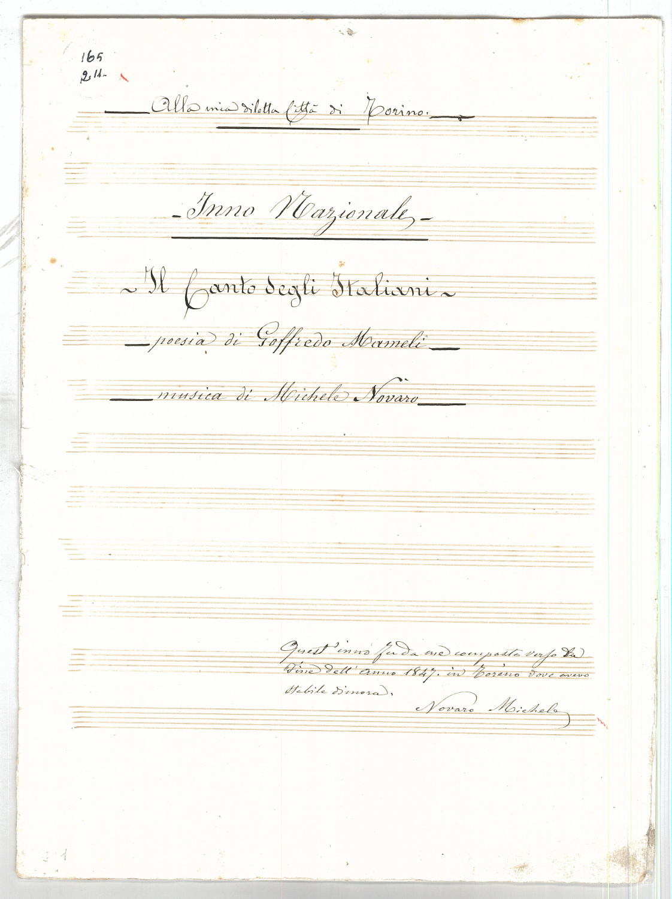
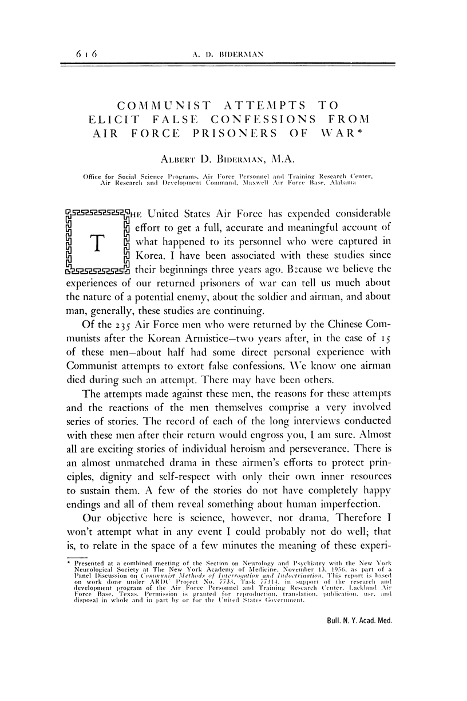

58:19 · 9 OPERE
Le proteste contro il “Green pass”.
Il filo del discorso
Dr Divago interpreta le manifestazioni contro il Green pass dell’estate 2021 come un ritorno della partecipazione e del legame fra cittadini. Il richiamo iniziale all’inno di Mameli collega la unione popolare alla possibilità di opporsi a chi governa; il resto del contributo sviluppa una polemica contro la distanza fra potere, informazione e vita sociale. Il relatore discute soprattutto il linguaggio che divide gli interlocutori in categorie e contesta che una etichetta possa sostituire il confronto sulle ragioni.
Leggi la sintesi completaRiduci la sintesi
L’analogia con la segregazione razziale è una sua scelta interpretativa: la scheda la distingue dalla storia e dalle definizioni giuridiche dei sistemi richiamati. Ascolta, piccolo uomo e La ballata delle madri sostengono una critica della subordinazione, prima del passaggio allo studio di Biderman sui prigionieri di guerra. Dr Divago ne percorre i metodi di coercizione e li applica alle restrizioni sanitarie; tale accostamento non dimostra da solo un progetto comune o una intenzione criminale. Il finale torna alla letteratura, con Fromm, il romanzo di Bergengruen e il dialogo fra Winston e O’Brien in 1984. Il filo conclusivo è la difesa della capacità di giudicare, che il relatore oppone alla accettazione di parole d’ordine. Le considerazioni sanitarie e le accuse personali del parlato restano attribuite e accompagnate da distinzioni verificabili.
I libri nel discorso

Il Canto degli Italiani (Inno di Mameli)
Note sul riferimento
Frontespizio della partitura autografa · Michele Novaro: FRONTESPIZIO della partitura autografa di Michele Novaro, riprodotta dalla Presidenza del Consiglio: titolo Il Canto degli Italiani, poesia di Goffredo Mameli e musica di Michele Novaro leggibili. Prima pagina del PDF ufficiale, resa integralmente in PNG. Non è il manoscritto autografo dei versi di Mameli né una copertina moderna.
Immagine autentica dell’opera, controllata visivamente; l’edizione di riferimento non è attribuita al filmato.
Inno di Mameli e seconda strofa espliciti.

Ascolta, piccolo uomo
Note sul riferimento
Copertina: SugarCo · Tasco, Scienze umane · 1996
Copertina autentica dell’edizione di riferimento, controllata visivamente. Non identifica l’esemplare letto o citato nel video.
Ascolta, piccolo uomo di Wilhelm Reich esplicito.

Odissea
Identificazione probabile
Note sul riferimento
Copertina: Einaudi · ET Classici · 2014
Copertina autentica controllata visivamente. Edizione di riferimento, non identificata come quella usata nel video.
Nessuno, Odisseo e Ulisse espliciti; il titolo non è pronunciato, collegamento probabile al libro IX.

La ballata delle madri
Note sul riferimento
Copertina della raccolta: Garzanti · 2001
La ballata delle madri è contenuta in Poesia in forma di rosa. L’immagine mostra la raccolta Garzanti del 2001, con prefazione di Edoardo Esposito, non un volume autonomo della poesia né l’edizione del video.
La ballata delle madri di Pasolini esplicita.

Costituzione della Repubblica Italiana
Note sul riferimento
Copertina dell’edizione Intra aggiornata al 2023: Intra · 2023 · introduzione di Umberto Vincenti
Copertina autentica del testo integrale, aggiornata alla legge costituzionale 26 settembre 2023 n.1. È successiva al filmato del 2019 e non rappresenta la versione storica letta dal relatore. Umberto Vincenti firma l’introduzione.
Costituzione italiana esplicita come riferimento della discussione.

Communist Attempts to Elicit False Confessions from Air Force Prisoners of War
Note sul riferimento
Prima pagina originale · articolo 1957: PRIMA PAGINA originale dell’articolo, pagina 616, dalla scansione PubMed Central: titolo, Albert D. Biderman e nota della presentazione del 1956 leggibili. Non è una copertina di libro o una infografica recente modificata.
Immagine autentica dell’opera, controllata visivamente; l’edizione di riferimento non è attribuita al filmato.
Biderman Report,1956 e tabella della coercizione: identificato lo studio presentato 1956 e pubblicato 1957.

Fuga dalla libertà
Note sul riferimento
Copertina: Mondadori, 2022
Erich Fromm e Fuga dalla libertà espliciti, forma nella trascrizione automatica normalizzata.
Der Großtyrann und das Gericht
Note sul riferimento
Copertina: Copertina autentica dtv, edizione 2002, ISBN 9783423129404: autore e titolo su fondo bianco sopra un giardino e un castello. Edizione di riferimento successiva alla prima del 1935, non attribuita al volume eventualmente mostrato.
Immagine autentica dell’opera, controllata visivamente; l’edizione di riferimento non è attribuita al filmato.
Il grande tiranno e il tribunale, titolo tradotto e ambientazione italiana: riscontro nel romanzo di Bergengruen.

1984
Note sul riferimento
Copertina: Newton Compton · edizione illustrativa
1984, Winston e O’Brien espliciti nel finale.